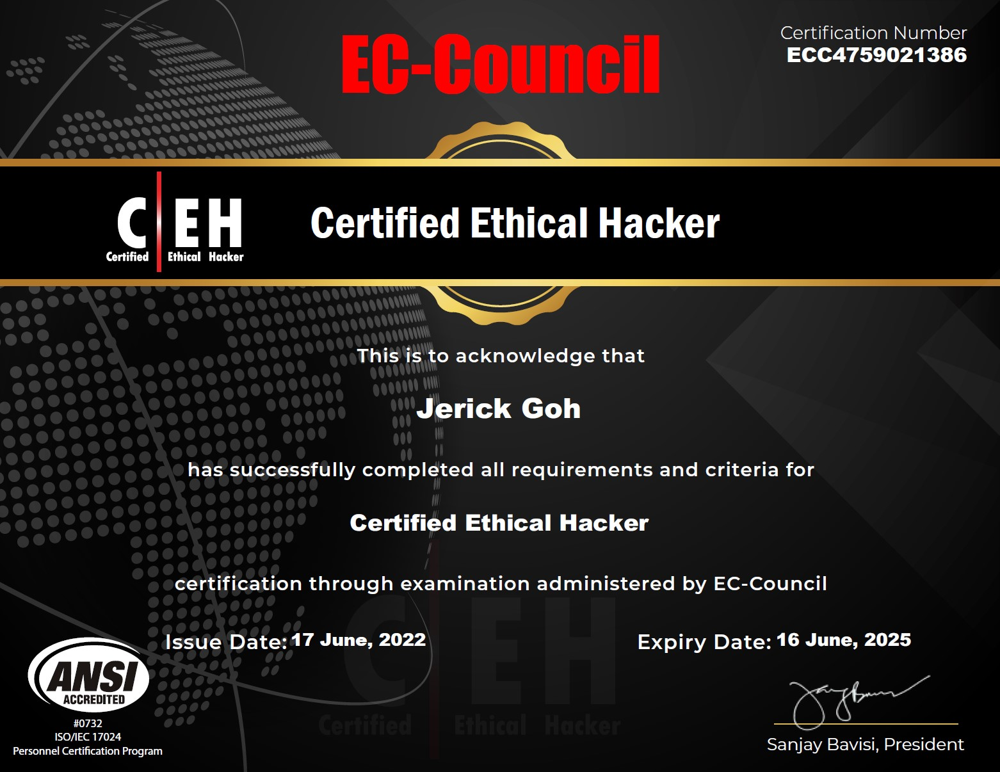

Information Security Student | Aspiring Cybersecurity Professional
I'm a first-year Information Security student at SIT University, passionate about cybersecurity and continuous learning. Outside of my studies, I enjoy Muay Thai and staying active at the gym.
My goal is to develop expertise in the cybersecurity field through hands-on projects, professional certifications, and real-world experience. I'm committed to building a strong foundation in security principles while staying current with emerging threats and defense techniques.

June 17, 2022
Successfully obtained the Certified Ethical Hacker certification from EC-Council, demonstrating proficiency in identifying security vulnerabilities and implementing defensive strategies using ethical hacking techniques.
Building a professional portfolio website to showcase my cybersecurity projects, certifications, and technical skills. This ongoing project helps me develop web development expertise while creating a platform to document my learning journey.
Conducting hands-on security research and participating in CTF challenges to sharpen my penetration testing skills and stay updated with the latest security techniques and vulnerabilities.